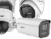
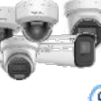
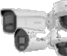
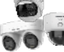
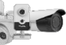

Cámara IP Pro ColorVu 3.0 con IACAM-01 · DS-2CD2xx7G3
Cámara IP serie Pro con imagen a color de noche y detección de personas y vehículos.
✔ Ve todo a color las 24 horas y recibe alertas reales, sin falsas alarmas.

Cámara IP Pro con zoom y audio de dos víasCAM-02 · DS-2CD2xx6G3
Cámara IP de alta resolución (hasta 12/16 MP) con luz disuasiva y audio de dos vías.
✔ Habla y ahuyenta intrusos desde el celular.

Cámara IP Pro AcuSenseCAM-03 · DS-2CD2xx3G3
Cámara IP con análisis AcuSense y modo Live Guard.
✔ Protección activa para negocios y hogares.

Cámara IP con memoria internaCAM-04 · DS-2CD2xx1
Cámara IP con WDR de 120 dB y hasta 256 GB de grabación en la cámara.
✔ Graba aunque se caiga la red.

Cámara IP Value ColorVuCAM-05 · DS-2CD1xx7G3(H)
Cámara IP económica con color nocturno y detección de movimiento 2.0.
✔ Calidad Hikvision a costo accesible.

Cámara IP EcoCAM-06 · DS-2CD1xx1G0
Cámara IP de entrada para proyectos pequeños.
✔ La opción más económica en IP.